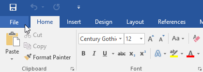
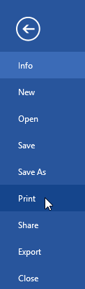
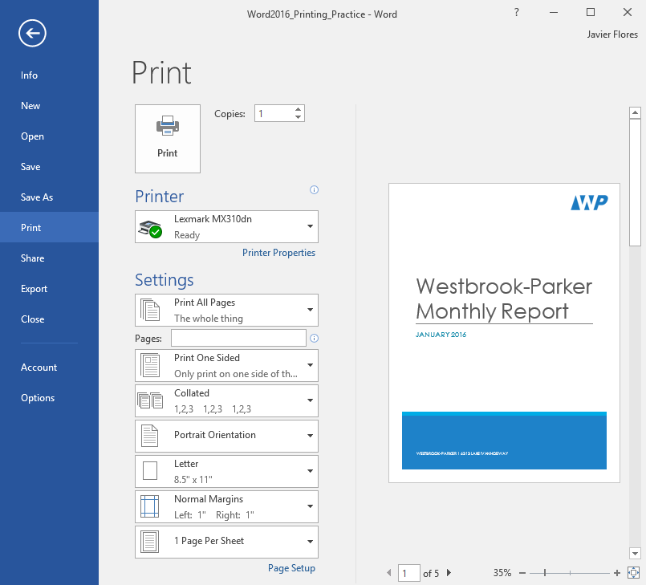
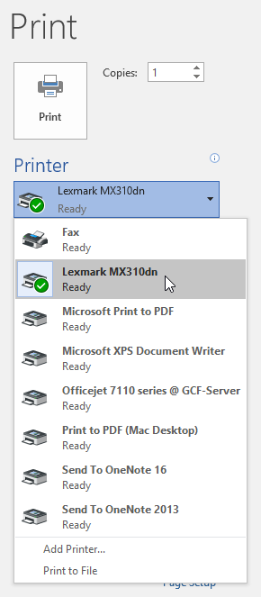
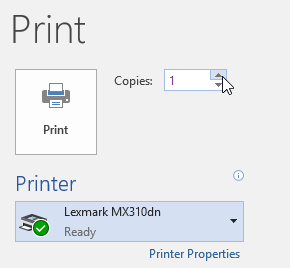
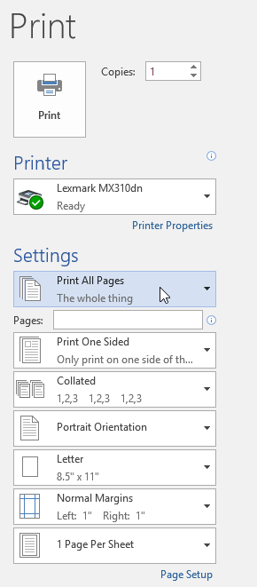
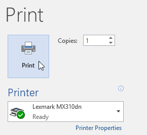
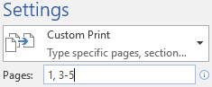
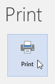
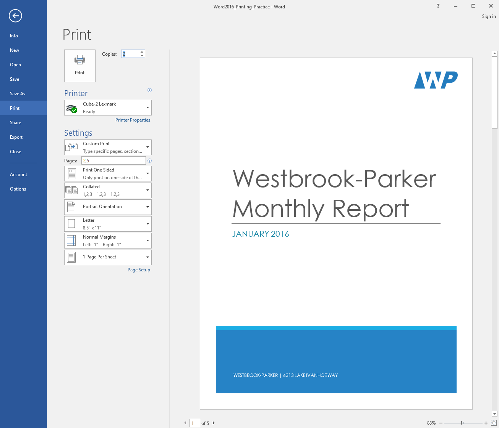

Lesson 13: printing-documents
Lesson 13: Printing Documents
/en/word/page-layout/content/
Introduction
Once you've created your document, you may want to print it to view and share your work offline. It's easy to preview and print a document in Word using the Print pane.
Watch the video below to learn more about printing documents in Word.

To access the Print pane:
- Select the File tab. Backstage view will appear.

2. Select Print. The Print pane will appear.
Click the buttons in the interactive below to learn more about using the Print pane.
edit hotspotsedit hotspots

Click this button to print the document.
Printer
If you have multiple printers, select the one you want to use.
Print Range
Here, you can choose to print the entire document, just the current page, or custom print to print specific pages.
Single- and Double-Sided Printing
Choose whether to print on one or both sides of the paper if your printer supports this setting.
Collated
If you are printing multiple copies, you can choose how the pages will be sorted. Collated will sort them 1, 2, 3, 1, 2, 3. Uncollated will sort them 1, 1, 2, 2, 3, 3.
Page Orientation
Here, you can choose portrait (vertical) or landscape (horizontal) orientation.
Paper Size
You can choose the paper size you want to use if your printer supports this setting.
Margins
Here, you can adjust the page margins.
Scaling
This option allows you to print more than one page on a single sheet or scale the document to fit a specific paper size.
Copies
Here, you can choose how many copies you want to print.
Page Selection
You can click the arrows to view a different page in the Preview pane.
Zoom Control/ Zoom to Page
Click and drag the slider to use the zoom control. The number to the left of the slider bar reflects the zoom percentage. You can click the Zoom to Page button on the right to set the zoom control to fit one page in the window.
Preview Pane
Here, you can see a preview of how your document will look when printed.
You can also access the Print pane by pressing Ctrl+P on your keyboard.
To print a document:
- Navigate to the Print pane, then select the desired printer.

2. Enter the number of copies you want to print.
3. Select any additional settings if needed.
4. Click Print.
Custom printing
Sometimes you may find it unnecessary to print your entire document, in which case custom printing may be more suited for your needs. Whether you're printing several individual pages or a range of pages, Word allows you to specify exactly which pages you'd like to print.
To custom print a document:
If you'd like to print individual pages or page ranges, you'll need to separate each entry with a comma (1, 3, 5-7, or 10-14 for example).
- Navigate to the Print pane.
- In the Pages: field, enter the pages you want to print.

3. Click Print.
If your document isn't printing the way you want, you may need to adjust some of the page layout settings. To learn more, review our Page Layout lesson.
Challenge!
- Open our practice document.
- In the Print pane, change the settings to print only pages 2 and 5.
- Change the number of copies to 2.
- Use the arrows at the bottom of the print preview to view each page.
- When you're finished, your Print pane should look something like this:
edit hotspots

6. Optional: If you have a printer, you can click the Print command. It should print two copies of pages 2 and 5./en/word/breaks/content/